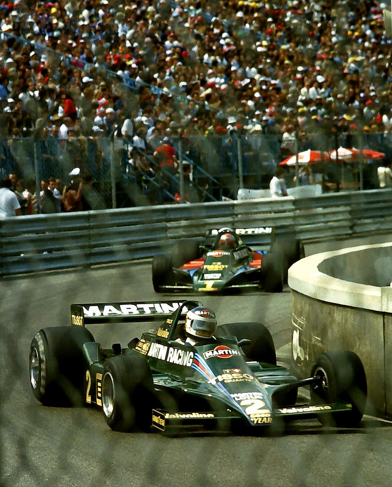
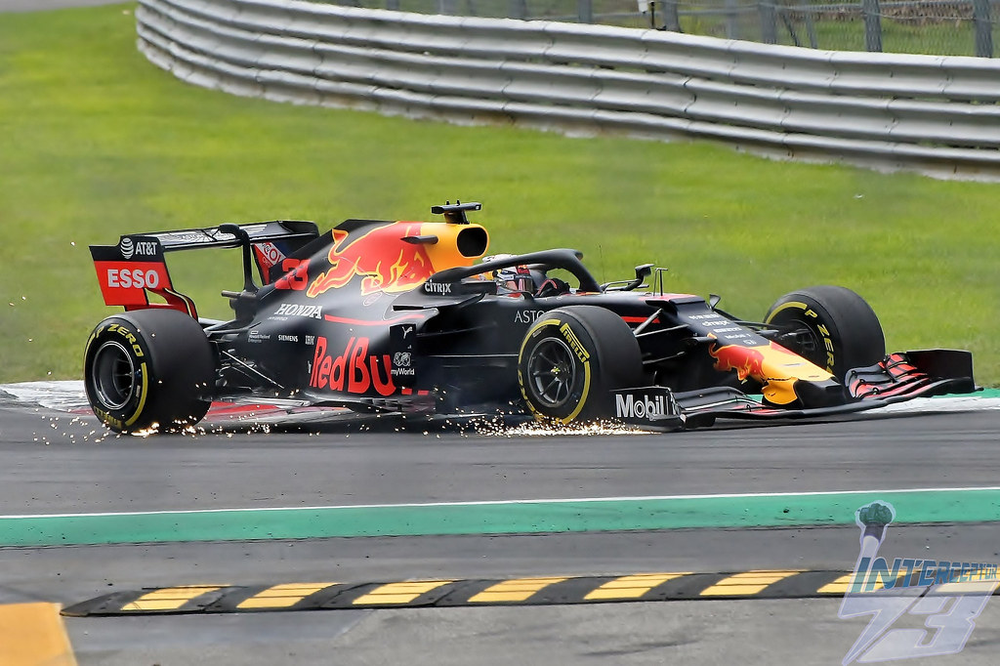
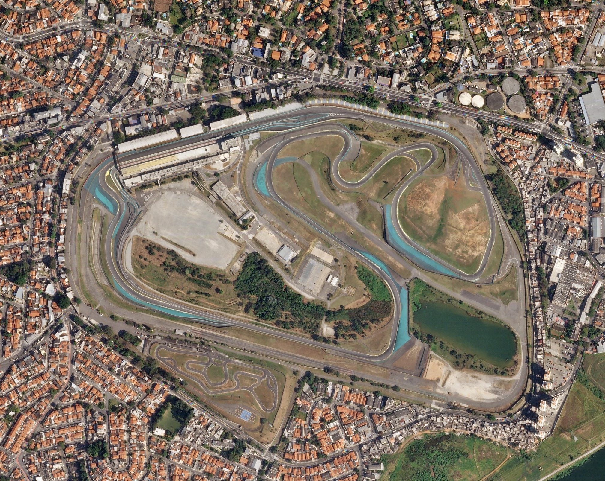

Monaco Grand Prix
The Monaco Grand Prix stands as the epitome of Formula 1 glamour and prestige. Racing through the narrow streets of Monte Carlo, drivers face one of the most challenging circuits in the world.
"Mario Andretti - Lotus 80 chases team mate Carlos Reutemann - Lotus 79 into the swimming pool complex at the 1979 Monaco Grand Prix" by Karting Nord is licensed under CC BY-SA 2.0.
Italian Grand Prix at Monza
Monza is known for its incredible speed and passionate fans. The Italian Grand Prix has been a staple of the Formula 1 calendar since 1950, celebrated for its historic track and thrilling races.
"Max Verstappen, Red Bull-Honda RB15, 2019 Italian Grand Prix, Monza, 8th September" by Interceptor73 is licensed under CC BY 2.0.
Brazilian Grand Prix at Interlagos
The Brazilian Grand Prix at Interlagos is famous for its unpredictable weather, passionate fans, and intense racing. It's a track where championships have been decided, and legends have been made.
"Autódromo José Carlos Pace, July 3, 2018 SkySat (cropped 2)" by Planet Labs, Inc. is licensed under CC BY-SA 4.0.
Famous Circuits and Their Characteristics
Silverstone Circuit, UK
- Known as the "Home of British Motor Racing," Silverstone is famous for its high-speed corners and long straights.
Circuit de Spa-Francorchamps, Belgium
- Renowned for its unpredictable weather, Spa is loved by drivers for its fast corners and the famous Eau Rouge and Raidillon complex.
Circuit of the Americas, USA
- A modern track with a mix of fast straights and tight corners, known for its steep uphill run into the first turn.